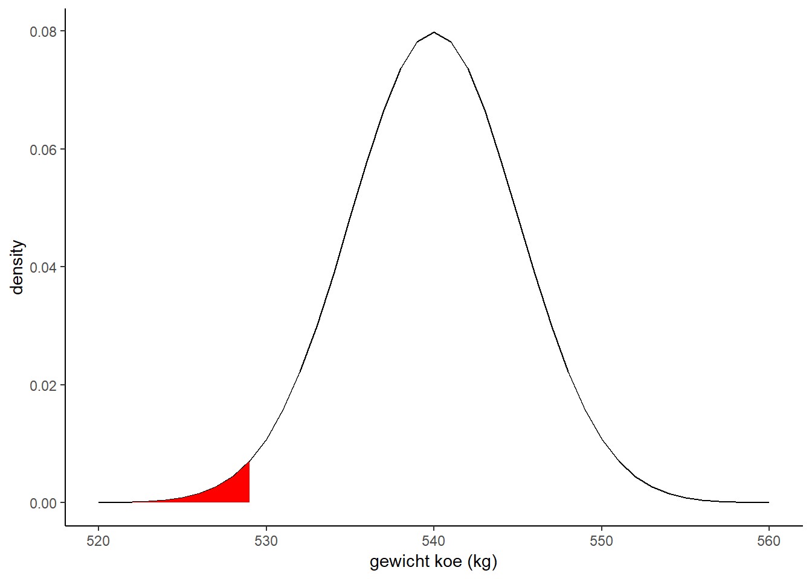

R als alternatief voor een tabel
In blok 2 heb je, met behulp van een tabel, de volgende vraag op kunnen lossen:
Koeien van het ras Holstein-Friesian hebben gemiddeld een gewicht van 540 kg, met een standaarddeviatie van 5 kg. De vraag is: Hoe hoog is de fractie koeien van het ras Holstein-Friesian met een gewicht tussen 542 en 545 kg?
Hoe pakte je dat aan in blok 2? Het gaat om de volgende verdeling: \(\underline{x} \sim N(\mu=540, \sigma=5)\). Fractie koeien tussen 542 en 545 kg: \(P(542<\underline{x}<545)\).
Volgende stap is omrekenen naar de standaard normale verdeling, je berekent dan de z-waardes van 542 en 545 kg: \(P \left( \frac{542-540}{5}<Z< \frac{545-540}{5} \right)\).
Vervolgens zoek je in de tabel de kans op \(P \left( Z>\frac{2}{5} \right)\) en \(P \left( Z>\frac{5}{5} \right)\) en trek deze van elkaar af: \(0.3446-0.1587 = 0.1859\)
In plaats van de tabel, kan je ook R-code gebruiken: pnorm(). NB: deze functie berekent standaard \(P \left( \underline{x}<q \right)\), dus de lower tail als je een normale verdeling bekijkt. Wil je het oppervlak aan de rechterkant van q weten, voeg dan het argument lower.tail = FALSE toe. Verder kan je ook aangeven wat het gemiddelde en de standaarddeviatie is, je hoeft dus niet eerst de z-waarden uit te rekenen. Wil je nu weten welke fractie koeien tussen 542 en 545 kg is, voer dan de volgende code uit:
pnorm(542, mean = 540, sd = 5, lower.tail = FALSE) -
pnorm(545, mean = 540, sd = 5, lower.tail = FALSE)Of korter:
pnorm(542, 540, 5, lower.tail = FALSE) -
pnorm(545, 540, 5, lower.tail = FALSE)Opdracht 10 Koeien, deel 1
- Schets de normale verdeling van het gewicht van de koeien.
- Geef met twee kleuren aan welke oppervlakken met bovenstaande code worden uitgerekend.
Stel, we willen weten welk deel van de populatie koeien minder dan 430 kg weegt. Het gaat dan om het rood gekleurde deel in onderstaande grafiek:

Opdracht 11 Koeien
- Bereken de fractie koeien lichter dan 430 kg.